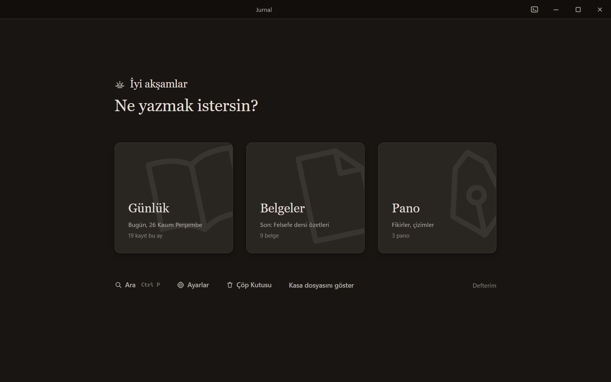
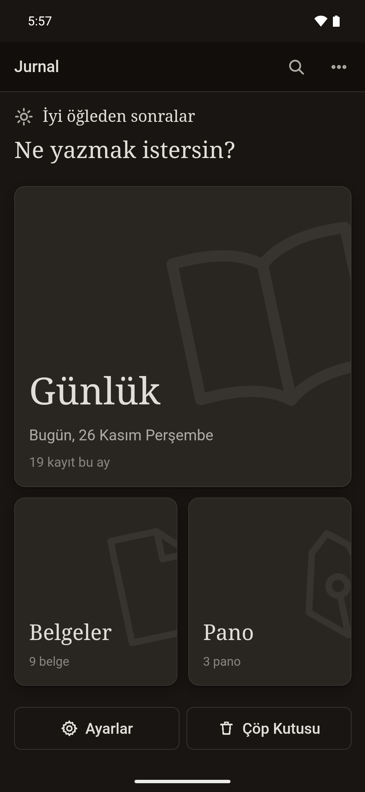
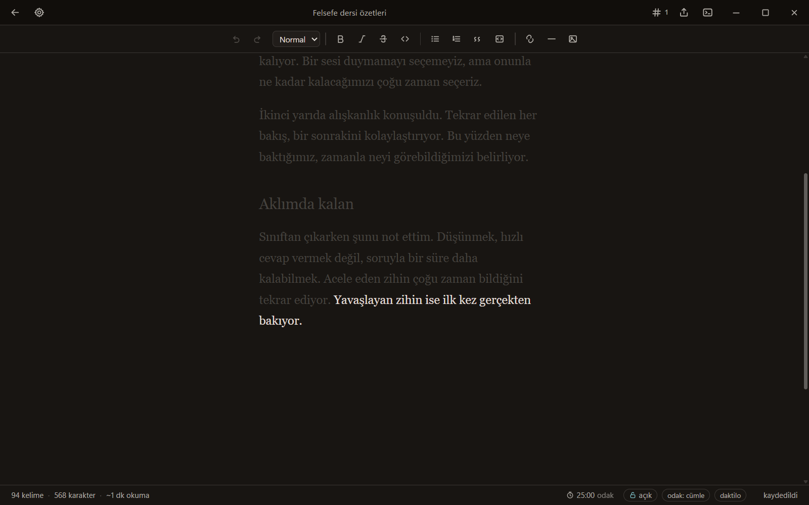
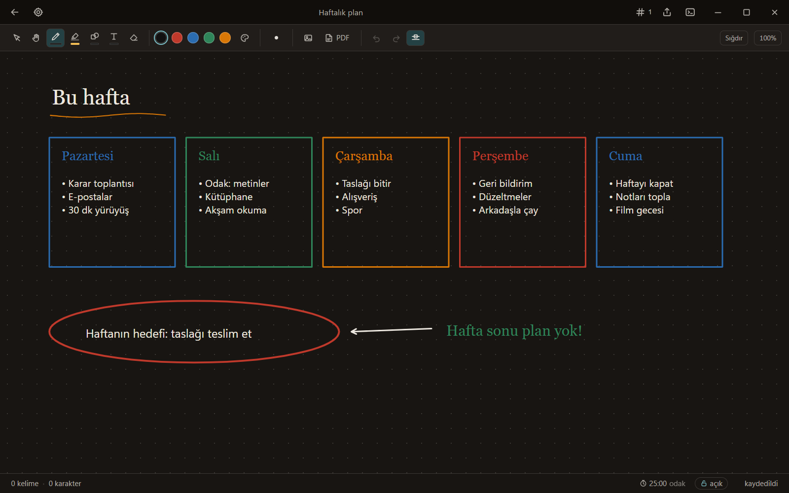
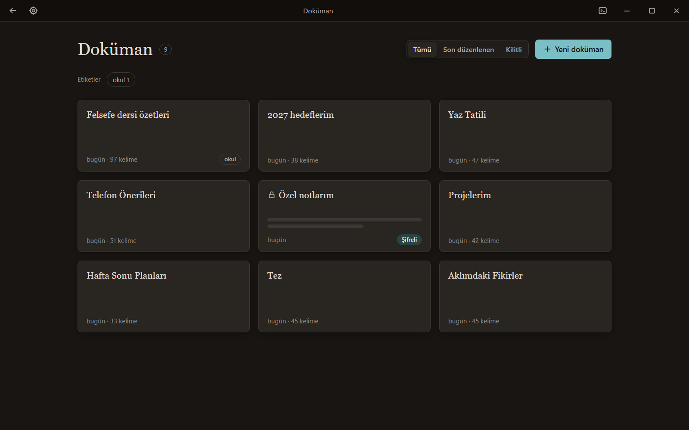
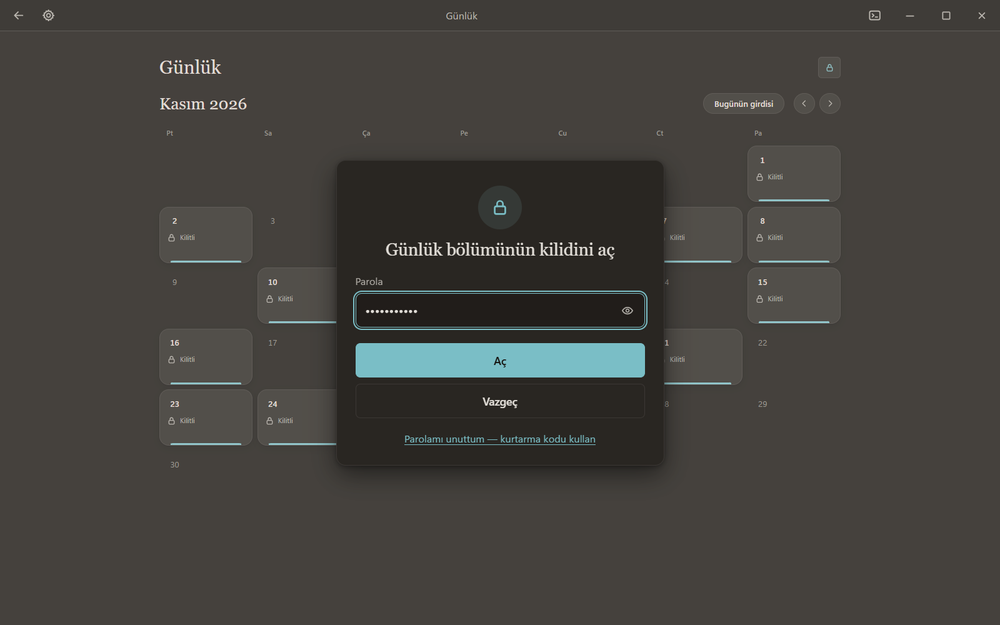

Günlük, belge ve pano bir arada
Gün gün günlük tutun, uzun belgeler yazın ya da serbest panoda kalemle, fosforluyla, şekil ve metinle düşünün. PDF'i panoya alıp üzerine çizebilirsiniz.
Günlük, belge ve serbest pano tek uygulamada. İsterseniz şifreleyin. Hesap yok, bulut yok, ağ yok: yazdığınız her şey kendi bilgisayarınızda kalır.
Ücretsiz. Reklam yok, izleme yok.


Yazarken arayüz geri çekilir. Odak ve Zen modu, tuşa bastığınız anda ekranda harf görmeniz için tasarlandı.
Bölüm ve belge bazında şifreleme. Ana parola yok; tek bir kurtarma kodu var ve o yalnızca sizde.
Uygulama hiçbir ağ isteği yapmaz. Verileriniz tek bir yerel .jurnal dosyasında durur.
Gün gün günlük tutun, uzun belgeler yazın ya da serbest panoda kalemle, fosforluyla, şekil ve metinle düşünün. PDF'i panoya alıp üzerine çizebilirsiniz.
Günlük bölümü ve her belge için ayrı anahtar. Tek ortak kurtarma kodu.
Çalışma süresi için zamanlayıcı, dikkat dağıtmayan ortam sesleri.
Yazılarınıza güne göre ya da kütüphaneden ulaşın; belge içinde arayın.
Markdown, Word, PDF ve görsel olarak dışa aktarın; içe aktarın, yedekleyin.
Sildikleriniz 30 gün boyunca geri getirilebilir durur.
Arayüz iki dilde; açık ve koyu temalar, çevrimdışı yazım denetimi.
Jurnal verilerinizi toplamaz, göndermez, paylaşmaz.




Evet. Beğenirseniz Buy Me a Coffee üzerinden geliştiriciyi destekleyebilirsiniz; bu isteğe bağlıdır.
Seçtiğiniz bir konumda, bilgisayarınızdaki tek bir .jurnal dosyasında. Uygulama hiçbir şeyi sunucuya göndermez. Yedeklemek için dosyayı kendiniz kopyalayabilirsiniz.
Şifrelediğiniz içerik, kod olmadan geri getirilemez; bu bilinçli bir tasarım kararıdır. Kodu ilk kilitleme sırasında güvenli bir yere kaydedin.
Windows (Microsoft Store) ve Android. Android sürümü Google Play için hazırlanıyor; yayınlandığında bu sayfada duyurulacak.
Uygulamada Ayarlar'daki "Hata bildir" ya da doğrudan jurnalapp@proton.me adresi ile yazabilirsiniz.